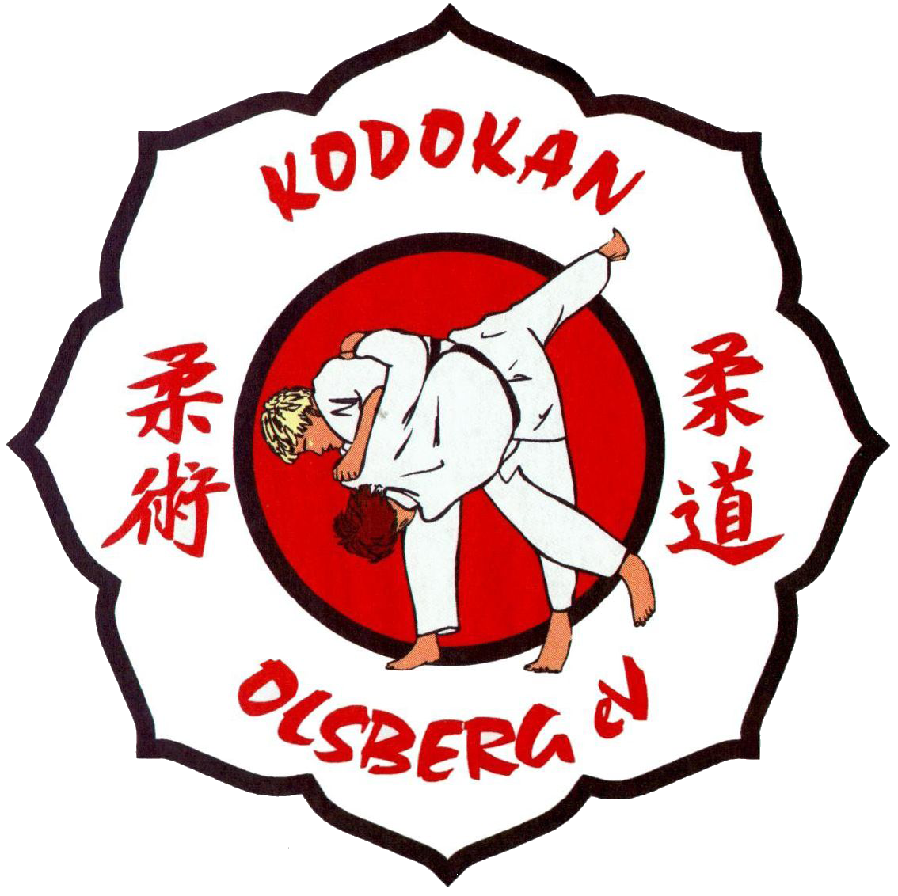
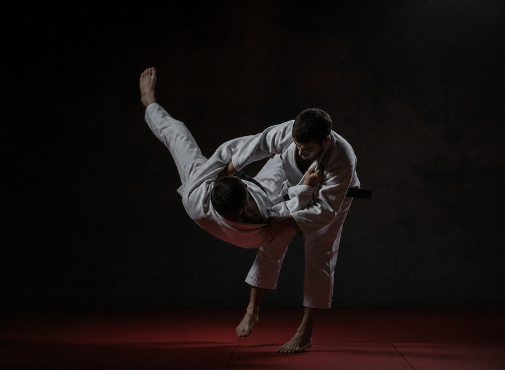
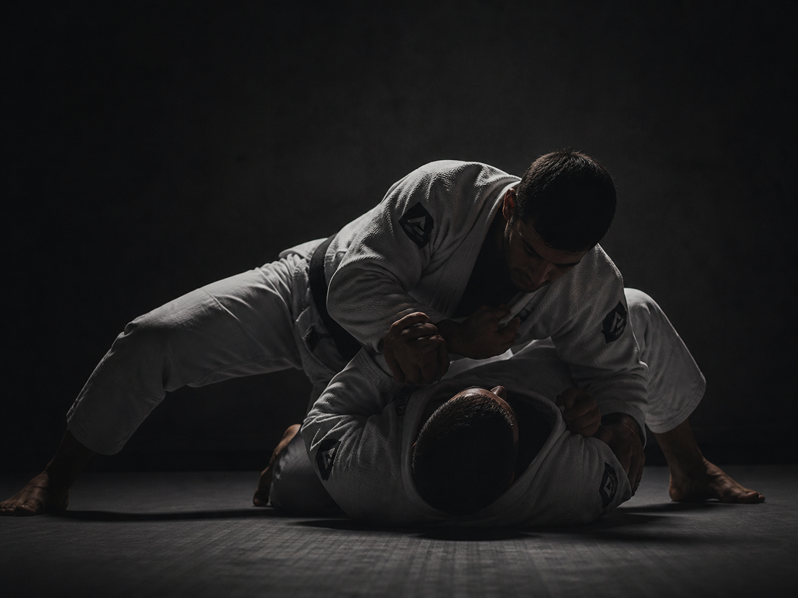

Judo und Jiu-Jitsu für alle Altersgruppen – vom ersten Wurf bis zur Meisterschaft. Werde Teil unserer Gemeinschaft.
Wir verbinden starke Jugend- und Talentförderung mit professionellem Training und erfolgreicher Wettkampfvorbereitung für Kinder, Jugendliche und Erwachsene. Ob erste Schritte auf der Matte oder gezielte Förderung im Leistungsbereich – bei uns entwickeln Sportler ihre Fähigkeiten in einem motivierenden Umfeld mit erfahrenen Trainern und einer starken Gemeinschaft.
Unser Fokus liegt auf persönlicher Entwicklung, sportlichem Erfolg und der Begeisterung für Judo und Jiu-Jitsu. Wer Qualität, Teamgeist und echte Förderung sucht, findet bei uns die besten Voraussetzungen, um sportlich und persönlich zu wachsen.
Der Judoverein Kodokan Olsberg e.V. vereint Tradition und modernen Kampfsport. Wir trainieren zusammen, wachsen zusammen und feiern gemeinsam Erfolge.
Unsere lizenzierten Trainer begleiten dich von der ersten Übung bis zum Schwarzgurt – individuell und engagiert.
Von Bambini-Judo für die Kleinsten bis zum Erwachsenentraining – bei uns ist jeder willkommen.
Ob Wettkämpfer oder Freizeitsportler – wir bieten das passende Training für jedes Ziel.
Der Dojo ist mehr als ein Trainingsraum – er ist ein Ort der Gemeinschaft, des Respekts und der Kameradschaft.
Gut erreichbar im Herzen des Sauerlandes – komm einfach zum Probetraining vorbei!
Mit Judo und Jiu-Jitsu bieten wir zwei der effektivsten und vielseitigsten Kampfkünste der Welt.
Zwei klassische Kampfsportarten mit jahrhundertealter Tradition – bei uns modern und altersgerecht vermittelt.

↗„Der sanfte Weg" – Judo ist eine der meistverbreiteten Kampfsportarten der Welt und olympische Disziplin. Im Fokus stehen Wurftechniken, Bodenkampf und mentale Stärke.
Trainingszeiten & Details
↗Die „sanfte Kunst" – Jiu-Jitsu kombiniert Hebel, Würge- und Wurftechniken zur effektiven Selbstverteidigung. Ideal für Einsteiger und erfahrene Kämpfer.
Trainingszeiten & DetailsTrainingsstätte: Turnhalle der Real- und Sekundarschule Olsberg, Bahnhofstraße 59, 59939 Olsberg.
Komm einfach zum Probetraining – keine Voranmeldung nötig. Wir freuen uns auf dich!